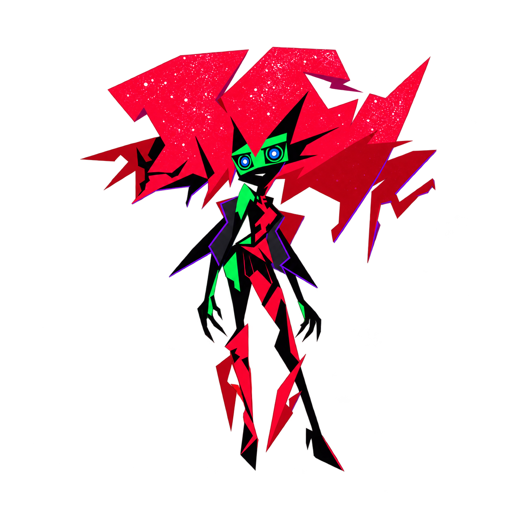

ZYREN / INTERACTIVE EXPERIENCE · V14
Interactive AI Lab.
Explore les systèmes d'EVA Discord, un tableau de bord communautaire et les animations de Capri. Toutes les données et actions sont simulées dans ton navigateur.
01 / EVA DISCORD
Configuration interactive
Reproduction pédagogique des huit modules /config. Les réglages restent locaux à cette démo.
CONTROL CENTER / CONFIG
02 / EVA CONTROL CENTER
Dashboard communautaire
Jeu de données fictif, indépendant du véritable bot. Les actions mettent à jour cette simulation.
Activité simulée / 7 jours
Automatisations
Crée une tâche fictive dans cette session. Aucun message n'est envoyé.
Journal de simulation
03 / CAPRI COMPANION
Sprite & Emotion Studio
Teste les poses de Capri à partir des vrais sprites présents dans le projet. La démo reste indépendante de l'application.

CAPRI / LOCAL SPRITE PREVIEWContrôle des animations
Certaines combinaisons pose/émotion n'existent pas : une pose disponible est alors sélectionnée automatiquement.